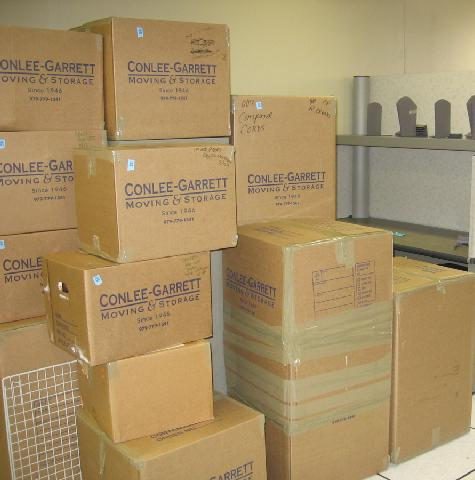

Ένας σκύλος του δημοσίου
5 τύποι, ένας μηχανικός, ένας λογιστής, ένας χημικός, ένας κομπιουτεράς,
και ένας δημόσιος υπάλληλος καυχιόντουσαν για το πόσο έξυπνα σκυλιά
έχουν.
Για να τους δείξει ο μηχανικός, φωνάζει τον σκύλο του. "Σχεδιαστή'' κάνε
το κόλπο σου!" του λέει! Ο 'Σχεδιαστής' ανεβαίνει πάνω σε ένα γραφείο,
βγάζει χαρτί και μολύβι και ζωγραφίζει έναν κύκλο, ένα τετράγωνο και ένα
τρίγωνο. Όλοι είπαν ότι είναι απίστευτο
Ο δικός μου είναι καλύτερος" λέει ο λογιστής. "Spreadsheet'' κάνε
παιχνίδι" του λέει. Ο σκύλος πάει μέσα στην κουζίνα και επιστρέφει με
μια ντουζίνα κουλουράκια, τα οποία διαιρεί σε 4 ίσα μέρη με τρία το
καθένα μέρος. Όλοι συμφώνησαν ότι ήταν εκπληκτικό.
Ο χημικός λέει ότι ο δικός του είναι καλύτερος! "Μεζούρα" του λέει,
"κάνε το κόλπο σου". Ο 'Μεζούρας'' σηκώνεται, πάει μέχρι το ψυγείο, το
ανοίγει, βγάζει μισό λίτρο γάλα και ένα ποτήρι και το γεμίζει μέχρι πάνω
χωρίς να του φύγει ούτε μια σταγόνα.
Όλοι είπαν ότι είναι κάτι παραπάνω από εντυπωσιακό.
Ο κομπιουτεράς λέει "ο δικός μου δεν παίζεται!". "Σκληρέ Δίσκε" του λέει
"κάνε τα κόλπα σου". Ο ''σκληρός δίσκος'' μπαίνει στο δωμάτιο με το
κομπιούτερ, το ανοίγει, ψάχνει για ιούς, κάνει αναβάθμιση στο
λειτουργικό σύστημα, στέλνει email, κάνει εγκατάσταση το tomb raider 5
και αρχίζει και παίζει! Όλοι είπαν ότι αυτός θα είναι μάλλον ο κορυφαίος
σκύλος.
Μα ο δημόσιος υπάλληλος είχε άλλη άποψη. "'Αραχτέ'', κάνε τα κόλπα σου".
Ο 'Αραχτός' σηκώνεται στα πόδια του, τρώει όλα τα κουλουράκια, πίνει το
γάλα, σβήνει όλα τα αρχεία στο κομπιούτερ, βιάζει και τους 4 σκύλους,
παραπονιέται ότι πονάει η μέση του μετά τον βιασμό, συμπληρώνει αναφορά
για επικίνδυνες συνθήκες εργασίας, την καταθέτει για αποζημίωση και πάει
σπίτι για 6 μήνες με αναρρωτική άδεια μετ'αποδοχών λόγω υπερκόπωσης.
Άντε και καλό μήνα συμπάσχοντες.
| |

| |

I am fucking ready man!!! | |
Τεστ με μία μόνο ερώτηση
Το τεστ περιέχει μια τυχαία, εντελώς φανταστική περίσταση όπου ΕΣΥ καλείσαι να πάρεις μια απόφαση!
Η ΠΕΡΙΣΤΑΣΗ
Είστε στη Νέα Ορλεάνη. Γύρω σου κυριεύει το χάος που προκάλεσε ένας
τυφώνας και πολλαπλές πλημμύρες.
Είναι μια πλημμύρα βιβλικών διαστάσεων. Είσαι ένας δημοσιογράφος -
φωτογράφος που δουλεύει για μία εφημερίδα.
Είσαι παγιδευμένος μέσα στην μέση αυτής της καταστροφής!!
Η κατάσταση είναι φοβερή! Προσπαθείς να τραβήξεις φωτογραφίες που θα
καθορίσουν την καριέρα σου. Σπίτια καταστρέφονται, άνθρωποι
ουρλιάζουν, άλλοι εξαφανίζονται κάτω από τα νερά! Πανικός!!!
ΤΟ ΤΕΣΤ
Ξαφνικά βλέπεις έναν άνθρωπο μέσα στο νερό! Παλεύει για τη ζωή του
προσπαθώντας να μη τον καταπιούν τα κύματα!
Είναι ο George Bush!!!
Την ίδια στιγμή βλέπεις τεράστια κύματα να κατευθύνονται καταπάνω του
έτοιμα να τον πνίξουν!
Έχεις 2 επιλογές:
1) Μπορείς να σώσεις την ζωή του George Bush ή
2) Να τραβήξεις μια δραματική φωτογραφία που αναπαριστά τον θάνατο ενός
από τους πιο δυνατούς και σημαντικούς ανθρώπους στον πλανήτη!
Η ΕΡΩΤΗΣΗ:
Θα επιλέξεις έγχρωμο φιλμ με υψηλή αντίθεση ή θα πας για την κλασική απλότητα του ασπρόμαυρου; | |
Ένας νεαρός ζωγράφος, ο Rob Gonsalves,
κάνει φοβερό παιχνίδι...με το μέγεθος των πραγμάτων...
και της φαντασίας. | |
Πολιτικές Ιδεολογίες...για αγελάδες
ΦΕΟΥΔΑΡΧΙΣΜΟΣ: Έχεις δύο αγελάδες. Ο αφέντης σου παίρνει ένα μέρος του γάλακτος.
ΚΑΘΑΡΟΣ ΣΟΣΙΑΛΙΣΜΟΣ: Έχεις δύο αγελάδες. Η κυβέρνηση τις παίρνει και τις βάζει σ' ένα στάβλο μαζί με τις αγελάδες όλων των άλλων. Εσύ πρέπει να φροντίζεις όλες τις αγελάδες. Η κυβέρνηση σου δίνει ακριβώς όσο γάλα χρειάζεσαι.
ΓΡΑΦΕΙΟΚΡΑΤΙΚΟΣ ΣΟΣΙΑΛΙΣΜΟΣ: Έχεις δύο αγελάδες. Η κυβέρνηση τις παίρνει και τις βάζει σε ένα στάβλο μαζί με τις αγελάδες όλων των άλλων. Μια ομάδα πρώην εκτροφέων κοτόπουλων, τις φροντίζει. Εσύ πρέπει να φροντίζεις τα κοτόπουλα που πήραν από τους πρώην εκτροφείς κοτόπουλων. Η κυβέρνηση σου δίνει ακριβώς το γάλα και τα αβγά που οι νόμοι λένε ότι χρειάζεσαι.
ΦΑΣΙΣΜΟΣ: Έχεις δύο αγελάδες. Η κυβέρνηση τις παίρνει και τις δύο, σε προσλαμβάνει για να τις φροντίζεις κι έπειτα σου πουλάει το γάλα.
ΚΑΘΑΡΟΣ ΚΟΜΜΟΥΝΙΣΜΟΣ: Έχεις δύο αγελάδες. Οι γείτονές σου σε βοηθούν να τις φροντίζεις και όλοι μαζί μοιράζεστε το γάλα.
ΡΩΣΙΚΟΣ ΚΟΜΜΟΥΝΙΣΜΟΣ: Έχεις δύο αγελάδες. Εσύ πρέπει να τις φροντίζεις αλλά η κυβέρνηση παίρνει όλο το γάλα.
ΔΙΚΤΑΤΟΡΙΑ: Έχεις δύο αγελάδες. Η κυβέρνηση τις παίρνει και τις δύο και σε εκτελεί.
ΣΤΡΑΤΙΩΤΙΚΟ ΚΑΘΕΣΤΩΣ: Έχεις δύο αγελάδες. Η κυβέρνηση τις παίρνει και τις δύο και σε καλεί στο στράτευμα.
ΚΑΘΑΡΗ ΔΗΜΟΚΡΑΤΙΑ: Έχεις δύο αγελάδες. Οι γείτονές σου αποφασίζουν ποιος θα πάρει το γάλα.
ΒΟΥΛΕΥΤΙΚΗ ΔΗΜΟΚΡΑΤΙΑ: Έχεις δύο αγελάδες. Οι γείτονές σου διορίζουν κάποιον που θα αποφασίσει ποιος θα πάρει το γάλα.
ΑΜΕΡΙΚΑΝΙΚΗ ΔΗΜΟΚΡΑΤΙΑ: Η κυβέρνηση υπόσχεται να σου δώσει δύο αγελάδες αν την ψηφίσεις. Μετά τις εκλογές, ο πρόεδρος κατηγορείται επειδή κερδοσκόπησε με τα "μελλοντικά" βοοειδή. Ο τύπος βαφτίζει το σκάνδαλο "Cowgate".
ΓΡΑΦΕΙΟΚΡΑΤΙΑ: Έχεις δύο αγελάδες. Στην αρχή η κυβέρνηση ορίζει πώς πρέπει να τις ταΐζεις και πότε μπορείς να τις αρμέγεις. Έπειτα, σε πληρώνει για να μην τις αρμέγεις. Στη συνέχεια, τις παίρνει και τις δύο, σκοτώνει τη μία, αρμέγει την άλλη και πετάει το γάλα. Στο τέλος, σε αναγκάζει να συμπληρώσεις μερικές φόρμες για να καταγγείλεις τις αγελάδες που λείπουν.
ΚΑΠΙΤΑΛΙΣΜΟΣ: Έχεις δύο αγελάδες. Πουλάς τρεις στην ανώνυμη εταιρία σου, χρησιμοποιώντας ανοιχτές τραπεζικές πιστωτικές επιστολές του κουνιάδου σου. Έπειτα, ξεκινάς μια ανταλλαγή μετοχών με δημόσια εγγραφή, και καταφέρνεις να τις ξαναπάρεις και τις τέσσερις αγελάδες με φορολογικές απαλλαγές για τη συντήρηση πέντε αγελάδων. Τα δικαιώματα στο γάλα έξι αγελάδων μεταφέρονται μέσω ενός παναμέζου μεσάζοντα στις νήσουν Καϊμάν, που είναι ιδιοκτησία του κυρίως μετόχου, που ξαναπουλά στη δική σου ΑΕ τα δικαιώματα του γάλατος και των 7 αγελάδων. Ο ετήσιος ισολογισμός επιβεβαιώνει ότι η εταιρία είναι ιδιοκτήτρια 8 αγελάδων με μια option αγοράς άλλης μίας. Στο μεταξύ, εσύ σκοτώνεις τις δύο αγελάδες επειδή το γάλα τους δεν είναι καλό.
ΠΕΡΙΒΑΛΛΟΝΤΙΣΜΟΣ: Έχεις δύο αγελάδες. Η κυβέρνηση σου απαγορεύει να τις αρμέγεις όσο και να τις σκοτώσεις.Επίσης απαγορεύεται να κόψεις χορτάρι για να τις ταϊσεις.
ΦΕΜΙΝΙΣΜΟΣ: Έχεις δύο αγελάδες. Παντρεύονται και υιοθετούν ένα μοσχαράκι.
ΣΟΥΡΕΑΛΙΣΜΟΣ: Έχεις δύο καμηλοπαρδάλεις. Η κυβέρνηση σε αναγκάζει να πάρεις μαθήματα φυσαρμόνικας.
| |

All in one.
Και κρέας...και φρούτο.
Το απόλυτο μελοντικό hard core junk food | |

υπάρχουν | |
Τα ρολάκια ωραίου καπνιστού σολομού γεμιστά με τυρί, κάππαρη και πιπεριές έχουν μια αιχμηρή ξηρή νοστιμιά ενώ τα σοταρισμένα μανιτάρια σε φωλιά από τορτίγια παρμεζάνας είναι μια έξτρα αρωματική, ισορροπημένη γεύση η καινούργια σαλάτα με ποικιλία λαχανικών έχει το προσόν να έχει νοτισμένο κάθε φυλλαράκι της με βινεγκρέτ μελιού-σουσαμιού και συνδυάζεται με τραγανό, παναρισμένο, κοτόπουλο.
Οι ταλιατέλες με ψιλοκομμένο μοσχαράκι ραγού έχουν βαθιά νοστιμιά που
θα τη ζήλευε Ιταλίδα mama. Το φιλέτο του κοτόπουλου μοσχοβολάει
δεντρολίβανο.
Το φινάλε παίζεται με καλή πανακότα και κέικ με δυνατή σοκολάτα που θα
ικανοποιήσει τους σοκολατομανείς.
Πριν φύγετε, περάστε οπωσδήποτε από τις πολύ όμορφες τουαλέτες έστω και για να τις χαζέψετε.
Από το Αθηνόραμα.
[download mp3: napalm_death] | |
Τα διαλεχτά κομμάτια κρέατος που με την πρώτη ματιά καταλάβαινες ότι είναι τεφαρίκια - από το λίπος που διέτρεχε τη σάρκα τους σαν τα νερά του μάρμαρου.
Είναι βοδινό της ράτσας Hereford, ξηρής ωρίμανσης (σιτέματος δηλαδή)
τεσσάρων εβδομάδων, και σερβίρεται σε τέσσερις εκδοχές: μπριζόλα των
850 γραμμαρίων, αντρεκότ, sirloin και φιλέτο. Αρκετά όμως με τις
προδιαγραφές, καθώς η πρώτη μπουκιά από ένα αψόγως σενιάν sirloin ήταν
αρκετή για να καταλάβω ότι αυτό ήταν μέχρι στιγμής το ωραιότερο κρέας
που έχω δοκιμάσει εν Ελλάδι: τρυφερότατο, με βαθιά νοστιμιά νοτισμένη
απ' το λιπάκι που λιώνει ποτίζοντας τη σάρκα του καθώς ψήνεται. Σε
ταρακουνάει όπως δεν το έχει κάνει κανένας wayou εξάδελφος του
περίφημου γιαπωνέζικου kobe beef που σερβιρίστηκε ποτέ στην ελληνική
επικράτεια. Βάλε τώρα και το χορό των 9-10 σπάνιων χοντρών αλατιών απ'
όλο τον κόσμο που σερβίρονται μαζί του και το ευχάριστο σοκ της
έντασης μεγεθύνεται καμία αλμύρα δεν έχει το ίδιο άρωμα, την ίδια υφή
με την άλλη, όταν μιλάμε για μαύρο και κόκκινο ηφαιστειακό αλάτι από
τη Χαβάη, αφρό fleur de sel εκ Γαλλίας, άλας από το Salt Lake των
Ηνωμένων Πολιτειών και τη Νεκρά Θάλασσα, αλάτι μαζεμένο με το χέρι από
τους βράχους των Κυθήρων.
Από το Αθηνόραμα.
[download mp3: poison_girls] | |
Λανσελότος – Γάτε ! Θ’ αργήσουν να γυρίσουν οι νοικοκύρηδες του σπιτιού ; Έ ; Δεν μιλάς ;
Γάτος - Όχι, δεν μιλάω.
Λανσελότος – Και γιατί αν επιτρέπεται ;
Γάτος - Όταν είναι κανείς βολεμένος στα ζεστά του, είναι καλλίτερα να κοιμάται ήσυχα και να κρατάει το στόμα του κλειστό, αγαπητέ μου φίλε.
Από το βιβλίο «Ο Δράκος» του Σβάρτς
| |
Ακόμα φοβάμαι τη θάλασσα.
Όχι το νερό.
Αγαπώ τη βροχή.
Φοβάμαι τον όγκο και την ιδιότητα της θάλασσας.
Αγαπώ τη βροχή...και όσα φέρνει...
...όποτε έρθει.
[download mp3: davidsylvian] | |
Όπου μένω εγώ, η βροχή σταματάει νωρίς.
Οι λίμνες γίνονται γούρνες λάσπης και τα ποτάμια ουλές στο φλοιό της γης.
Οι άνθρωποι χαίρονται προσωρινά την καλοκαιρία.
Γρήγορα όμως επιζητούν μια συννεφιά που χρησιμεύει ως σκιά.
Η απόσταση ως την επόμενη βροχή είναι άδικη.
Άδικος και ο χρόνος που δεν με λυπάται.
Και με ακολουθεί μια αμνησία...
Σκόπιμη. Λήθη.
Θέλω να μη θυμάμαι όσα δεν θέλω.
Η προσπάθεια όμως, με κάνει να θυμάμαι περισσότερο.
Θέλω να θυμηθώ όσα ξέχασα να ακούσω.
Η προσπάθεια όμως, με κάνει να λυπάμαι που δεν μπορώ.
Και η βροχή...πάντα σταματάει νωρίς
[download mp3: thecinematicorchestra] | |
Ψηφίσαμε δήμαρχο με ανθρώπινο πρόσωπο... | |
Σουπερ-ρεαλισμός, είναι μια μορφή τέχνης η οποία βγήκε στην επιφάνεια στη δεκαετία του '60. Έχει να κάνει με '' φωτο-ρεαλιστική'' ζωγραφική. Δηλαδή, εικόνες ναι μεν ζωγραφισμένες, αλλά τόσο πιστές στο θέμα που μοιάζουν με φωτογραφία.Από τους περισσότερο γνωστούς του χώρου είναι ο Richard Estes,ο Chuck Close και ο εκπλικτικός Ralph Goings. Σήμερα, κάτι με την (σωστη) χρήση και βοήθεια των υπολογιστών, υπάρχουν δημιουργοί που δουλεύουν και με τους δυο τρόπους ταυτόχρονα. Και λογισμικά και με το πινέλο. Ένας από αυτός...
ο Gilles Tran. | |

| |
"...μη φοβάσαι παιδί μου!Δεν υπάρχει θάνατος.Υπάρχει βέβαια ο φόβος του θανάτου και είναι φριχτός και τρομερός,αναγκάζει τους ανθρώπους να κάνουν πράγματα που δεν θα ’πρεπε...Μπορείς να φανταστείς πόσο διαφορετικά θα ήταν τα πράγματα αν δεν φοβόμασταν το θάνατο?-ή μάλλον, αν δεν φοβόμασταν το φόβο του θανάτου?Παρόλο που οι επιστήμονες λένε ότι αυτός ο φόβος είναι αναγκαίος στον άνθρωπο.Προστατευτικός μηχανισμός...Σαν τον σωματικό πόνο που σε προειδοποιεί για τον κίνδυνο.Εγώ πάντως έχω διαφορετική γνώμη.Αν και ούτε τα παιδιά ούτε οι διανοητικά ανάπηροι φοβούνται το θάνατο, όπως λέει ο Σενέκας.Εξάλλου δεν ολοκληρώνει άσχημα το συλλογισμό του: Είναι ντροπή ,λέει, να μην μπορεί η λογική να μας χαρίσει την ίδια ξεγνοιασιά...σαν των παιδιών δηλαδή..."
Aντρέι Ταρκόφσκι
[download mp3: bach] | |
Ας είμαστε τεμπέληδες σε όλα εκτός από τον έρωτα, το πιοτό και την τεμπελιά.
Λέσσινγκ
| |
Από υγρές συννεφιασμένες ημέρες, μοναξιά, λόγια ψυχρά που μας είπε κάποιος, τα συμπεράσματα φυτρώνουν σαν μανιτάρια : Ένα πρωί τα βλέπουμε μπροστά μας, δεν ξέρουμε πούθε φύτρωσαν και πως μας κοιτούν έτσι ζοφερά και παράξενα. Αλίμονο στον στοχαστή που δεν είναι κηπουρός αλλά μόνο το έδαφος των φυτών του !
Νίτσε
[download mp3: smiler] | |
Ο γέροντας χάνει ένα από τα βασικά ανθρώπινα δικαιώματα : δεν τον κρίνουν πια οι όμοιοί του.
Γκαίτε
[download mp3: atahualpa_yupanqui] | |
Λογική είναι η τρέλα του ισχυρότερου.
Μισέλ Φουκό
Είναι παραδοσιακά η μοίρα της αλήθειας να ξεκινά ως αίρεση και να τελειώνει ως πρόληψη.
Αldous Haxley
[download mp3: marran_gosov] | |
Αστυνομική εγκύκλιος διαταγή του 1883!
Α Ρ Θ Ρ Ο Ν 1ον : Παρακαλούνται πάντες και πάσαι όπως μεθαύριο , Πέμπτην 6ην Δεκεμβρίου 1883 , κατά την πανηγυρικήν εορτήν του Αγίου Νικολάου και επί τη εσχάτη ευκαιρία της συγκεντρώσεως των ξένων , οι κάτοικοι της δικαιοδοσίας μου εκτελέσωσι γενικήν καθαριότητα των δρόμων της εγχωρίου ταύτης πόλεως .
Α Ρ Θ Ρ Ο Ν 2ον : Να ενώσωσι δια στερεών αλύσεων τους κύνας και τους σκύλους και άπαντα τα κακοποιά στοιχεία τα δυνάμενα να προσβάλλουν την εχγωρίαν αιδώ .
Α Ρ Θ Ρ Ο Ν 3ον : Να θέσωσι φίμωτρα ανά τα στόματα των φωνασκούντων εμψύχων ζώων και πτηνών , διαφόρων καταγωγών ,γένους και φύσεως ή και ανθρωπογύναικων , ακαταλλήλων συμπεριφοράς εις ξένους κατά την υπερτελούμενην ενταύθα πανήγυριν .
Α Ρ Θ Ρ Ο Ν 4ον : Να εμποδισθούν βία το γκάρισμα των όνων και των μουλαριών , το χλιμίντρισμα των ίππων και των γαλών , δηλαδή των κατσουλιών .
Α Ρ Θ Ρ Ο Ν 5ον : Θα τους πεθάνω δι’ άρθρων . Τι νομίζουν πώς είναι οι αυγοπώλαι , καπνοπώλαι , οινοπώλαι , λαχανοπώλαι , μη εξαιρουμένων και των γνωστών εν γένει εμπορευομένων . Να τηρήσουν άκραν καθαριότητα , καλήν ζύγισιν , αρίστην ποιότητα και σκευάζουν δικαιοστάσιον των ζυγαριών των , των σταθμών των και των μέτρων των , προς το συμφέρον της υπηρεσίας . Οι παραβάται του διατάγματος τούτου τιμωρηθήσονται κατά το άρθρον 5 της Αστυνομικής ταύτης διατάξεως και του άρθρου 72 του Ποινικού Νόμου Περί Βλάβης Ηθών και Τιμής .
Α Ρ Θ Ρ Ο Ν 6ον : Απαγορεύεται το πλύσιμο τη θαλάσση ( σημ. μεταφραστή : η Δημητσάνα, ως γνωστόν , απέχει πολλά χιλιόμετρα από την θάλασσα ). Επίσης η είσοδος αμφοτέρων των γενών και ουδετέρων εις θερμούς λουτήρας καθ’ όλην την διάρκεια της εορτής . Ωσαύτως η διανυκτέρευσις και μετάβασις προς ρεμβασμόν εις τους πρόποδας της θαλάσσης , παρά τας θάλασσας , αμφοτέρων των γενών ,προς αποφυγήν ακουσίου απαγωγής μεταξύ των.
Α Ρ Θ Ρ Ο Ν 7ον : Όσοι παρ’ εμού αφθώσιν και των οργάνων μου συλλαβούντες άρρενες μετά θηλέων , θέλουσι ραβδισθεί ανελλιπώς εν τω κρατητηρίω .
Α Ρ Θ Ρ Ο Ν 8ον : Απαγορεύεται η διέλευσις ανθρώπων επί κτηνών προς αποφυγήν καταπατήσεων παίδων , ως και υπό βατήρος ελεύνοντος προ των κτηνών και ως λόγου χάριν είδον ο υποφαινόμενος άρρενα σπεύδων ψιτ ψιτ ψιτ όπισθεν θήλεου τινός , οι πόδες ηστόχησαν και δεν πάτησαν την εσθήτα του ποδός ταύτης , και ας είναι και άλλην ημέραν θα τιμωρηθώσι δια το σπουδαίον τούτο ζήτημα. Και δια να είμεθα εντός τάξεως οι παραβάται θα διώκονται βάσει του άρθρου 1072 του Ποινικού Νόμου .
Α Ρ Θ Ρ Ο Ν 9ον : Το κλείσιμον των καταστημάτων κανονίζω ,πλην των λεσχών , την δύσιν του ηλίου και των οινοπωλείων την ενδεκάτην της νυκτός , των δε θεαμάτων την δωδεκάτην μεσονύκτιον πλην του δημοσίου θεάματος της καραγκιοζαρίας την πρωίαν περί το λυκαυγές αμά τη εμφανίσει του ηλίου εις την γην αβδηρίτων κοινοτήτων . Και αυτό διότι θα παρίσταται ο υποφαινόμενος εν τη μεγάλη στολή και παρασημοφορία .
Α Ρ Θ Ρ Ο Ν 10ον : Απαγορεύονται αι σεισμικαί δονήσεις προς αποφυγήν καταπλήξεως του κοινού και του λαού και χάριν της τηρήσεως αναψυχής .
Α Ρ Θ Ρ Ο Ν 11ον : Απαγορεύεται ενώπιον ξένων η μαγκουροφορία , ο πυροβολισμός , το απότομον βήξιμον , η εκκαθάρισις της ρινός
Α Ρ Θ Ρ Ο Ν 12ον : Απαγορεύεται το συνομιλείν εντός του λουτήρος με άτομα εις άλλους λουτήρας , ως και το τάραγμα του ύδατος δι’ αερίων αφεδρωνοκρουσιών .
Α Ρ Θ Ρ Ο Ν Τ Ε Λ Ε Υ Τ Α Ι Ο Ν : Περί την μεσημβρίαν ψαλήσσεται μεγάλη παράκλησις προς απομάκρυνσιν πάσης ασθενείας ζώων , ανθρώπων , γυναικών , περονόσπορου , ποδάγρας κλπ. Η εκτέλεσις της παρούσης ανατίθεται εις τα υπ’ εμέ όργανα .
Εν Δημητσάνα τη 3 / 12 / 1883
Ο Αστυνομικός Διοικητής
ΕΜΜΑΝΟΥΗΛ ΛΑΓΟΥΔΑΚΗΣ
Υπενωμοτάρχης
| |

Πρόβλημα: Δεν ξέρουμε πως να κλείσουμε το πορτάκι του cd
Τρόπος της γραμματέως: Βγάζουμε πρώτα την κούπα του καφέ από το πορτάκι κι ύστερα φωνάζουμε τον τεχνικό για βοήθεια.
Τρόπος του χακερά: Πηγαίνουμε στο δικτυακό τόπο http://www.apolatakaloudia.com, βρίσκουμε σχετικό πρόγραμμα, το κατεβάζουμε, κατεβάζουμε και το crack του από το http://www.olataspame.pir και το εγκαθιστούμε.
Τρόπος του μηχανικού: Σπρώχνουμε με τα δάχτυλα το πορτάκι προς τα μέσα για λίγο, έχοντας παρατηρήσει ότι από κάποιο σημείο συνεχίζει μόνο του.
Τρόπος του μαθηματικού: Έστω χ το πορτάκι και ψ η κατάστασή του, όπου ψ ε {ανοιχτό, κλειστό}...
Τρόπος του "σπασίκλα": Κάθεσαι για 72 συνεχόμενες ώρες στον υπολογιστή, γράφεις ένα πρόγραμμα που το κάνει χρησιμοποιώντας κλήσεις συστήματος. Προσθέτεις πλήρη τεκμηρίωση, άδεια χρήσης (συνήθως κάτι σε free), το ανεβάζεις στην ιστοσελίδα σου μαζί με κείμενο 5 σελίδων για επεξήγηση και απαντάς προσωπικά στα χιλιάδες ηλεκτρονικά μηνύματα των χρηστών που θα το κατεβάσουν. Προαιρετικά: Ιδρύεις ένα μη κερδοσκοπικό σύλλογο για την προώθηση του προγράμματος, τυπώνεις μπλουζάκια με το λογότυπό του, οργανώνεις συναντήσεις ανά τον κόσμο των φανατικών χρηστών του κλπ.
Τρόπος του σύμβουλου της επιχείρησης: "Ο υπολογιστής δεν είν' ακόμα στην εγγύηση; Τον δίνουμε πίσω και μας φέρνουν έναν ολοκαίνουριο."
Τρόπος του συνδικαλισμού: Όλο το γραφείο κάνει απεργία πείνας μέχρι να κλείσει το πορτάκι. (Μετά από 62 μέρες απεργίας, ο αγώνας τελικά δικαιώνεται)
Τρόπος του Μαγκάιβερ: Βγάζουμε το καπάκι του ρυθμιστικού διακόπτη των ηχείων, παίρνουμε την μπαταρία από ασύρματο ποντίκι, την κεραία από το διπλανό ραδιόφωνο και μερικά τρανζίστορ από το μόντεμ και φτιάχνουμε έναν απλούστατο ηλεκτρονικό μηχανισμό που κλείνει το πορτάκι μόλις βραδιάσει.
Ψυχοαντιδραστικοβιολογικός τρόπος: Ανοίγουμε το παράθυρο ώστε να πέσει η θερμοκρασία του χώρου, να αιθανθεί κρύο το cd και να κλείσει από μόνο του.
Κρητικός τρόπος: Βγάζουμε το Ούζι και πυροβολούμε το cd τραγουδώντας σχετική αυτοσχέδια μαντινάδα.
Ποντιακός τρόπος: Δίνουμε μια κλωτσιά στην οθόνη.
Πολιτικά ορθός τρόπος: Με αφορμή το πρόβλημα στο κλείσιμο του καπακιού του cd συνειδητοποιούμε τα αδιέξοδα της σύγχρονης παγκοσμιοποιημένης κοινωνίας, την κρίση του καπιταλισμού και την αποξένωση από το πραγματικό είναι της ανθρώπινης φύσης, τον κοινωνικόοικονομικό- πολιτιστικό σεκταρισμό και το προτσές της ενσωμάτωσης του ελεύθερου χρόνου στην εργασία με σκοπό την απογύμνωση του ανθρώπου από κάθε είδος ψυχικής έπαρσης και τη δημιουργία αυτόνομων, αλλά εξαρτημένων σφαιρών επιρροής...
Σουρεαλιστικός τρόπος: Φωνάζουμε "Βαγγέλη!!!" και το πορτάκι κλείνει αυτόματα. (Βλέπε την ταινία "Μια Ελληνίδα στο χαρέμι" για περισσότερες πληροφορίες.)
Ψωνισμένος τρόπος: Φωνάζουμε όλα τα κανάλια. Μας βγάζουν στα παράθυρα σε όλες τις σχετικές εκπομπές. Προβάλλεται και το σχετικό ριάλιτυ: "Κλείσε το πορτάκι". Το πορτάκι ίσως να είναι ακόμα ανοιχτό, αλλά εμείς γίναμε πασίγνωστοι στο Πανελλήνιο.
Cool τρόπος: Στέλνουμε από το κινητό ένα μήνυμα στο 1515 ή παίρνουμε στο 9011 23 24 25 στην πιο ζωντανή παρέα κλεισίματος πορτακίων cd υπολογιστών.
Καλλιτεχνικός τρόπος: Γυρίζουμε μια ταινία με τίτλο "Το ανοιχτό πορτάκι". Το Ελληνικό Κέντρο Κινηματογράφου μας επιχορηγεί και κερδίζουμε 7 βραβεία στο Φεστιβάλ Κινηματογράφου Θεσσαλονίκης.
Δημοσιοϋπαλληλικός τρόπος: "Δε βαριέσαι, ας μείνει ανοιχτό. Αερίζεται καλύτερα έτσι..."
Τρόπος του Σημίτη: Δημιουργούμε 12.000 νέες θέσεις εργασίας (προσλαμβάνοντας συμβασιούχους για να κλείνουν το πορτάκι) συμβάλλοντας έτσι στην απορρόφηση του Κοινοτικού Πλαίσιου Στήριξης. Δήλωση Μητσοτάκη: "Ας μείνει ανοιχτό. Σε 10 χρόνια, έτσι κι αλλιώς θα το έχουμε ξεχάσει..."
Βιβλικομεταμοντέρνος τρόπος: Παίρνουμε το μηχάνημα, τον Αρχιεπίσκοπο και 200 ιερείς του Βάαλ και ανεβαίνουμε σε ένα ψηλό βουνό. Οι 200 ιερείς προσεύχονται επί 3 ημέρες και το πορτάκι δεν κλείνει. Μόλις κάνει ο Αρχιεπίσκοπος ένα σταυρό, το πορτάκι κλείνει αμέσως. Όλοι μένουν έκπληκτοι με το θαύμα. Το βουνό κηρύσσεται αμέσως ιερό και απ' όλα τα μέρη της Ελλάδας καταφτάνουν πιστοί για να προσκυνήσουν τον ιερόυπολογιστή. Τα κέρδη της Εκκλησίας από τα εισητήρια και τις εισφορές υπολογίζονται σε πάνω από 2 εκ. ευρώ.
Τρόπος της κας Ελένης Λουκά: Καίμε το πορτάκι μαζί με τον υπολογιστή για να τα λυτρώσουμε από το Σατανά.
Τρόπος των αναρχικών: Όπως προηγουμένως, αλλά καίμε και ολόκληρο το γραφείο μαζί...
Στρατιωτικός τρόπος: Το πορτάκι διατάσσεται από τον αξιωματικό υπηρεσίας να κλείσει. Εφ' όσον δεν υπάρχει απάντηση (και καμία αντίδραση γενικώς), καταδικάζεται σε στέρηση εξόδου, αγγαρεία στα μαγειρία και 10ήμερη φυλάκιση για απειθαρχία και ασέβεια προς ανώτερο. "
bofmar
| |
Είμαι ένας μοναχικός συγγραφέας, όσο κι αν μιλήσω για πόλεμο και ειρήνη δεν πρόκειται να αλλάξει η ροή των γεγονότων. Λίγοι άνθρωποι έχουν σαφή ιδέα για το τι σημαίνει ειρήνη. Όμως υπάρχουν ελάχιστοι που έχουν μία ακριβή ιδέα για το τι είναι τέχνη ή αγάπη. Αλλά την ιστορία δεν την κάνουν αυτοί. Την κάνουν εκείνοι που δεν έχουν ιδέα από τίποτα ή σχεδόν τίποτα, ψάχνουν στο σκοτάδι δήθεν καλοπροαίρετα και γοητεύουν εξαπατώντας. Την ώρα που αυτοί δουλεύουν για την καταστροφή, το μόνο που απομένει σε μας είναι να προσθέσουμε κάτι στο έργο μας.
Άλμπερ Καμύ
| |
Προτίμησαν κάποιον άλλον αντί για σένα σε μία συνεστίαση, σε μία προσφώνηση ή στην πρόσκληση για κάποια σύσκεψη ; Μην ξεχνάς πως δεν μπορείς να αξιώνεις ίση μεταχείριση, ενώ δεν κάνεις ότι και οι άλλοι προκειμένου να εξασφαλίσεις αυτά που δεν είναι στη δύναμή σου.
Γιατί πως είναι δυνατόν, όποιος δεν συχνάζει στους προθάλαμους των ισχυρών να έχει την ίδια μεταχείριση με αυτόν που συχνάζει ; Ή όποιος δεν είναι παρατρεχάμενος κανενός, με τον παρατρεχάμενο ; Ή όποιος δεν λιβανίζει με αυτόν που λιβανίζει ; Άδικος είσαι και άπληστος, αν θέλεις να τα αποκτήσεις αυτά χάρισμα, χωρίς να καταβάλεις το τίμημα αντί του οποίου πουλιούνται !
Επίκτητος
| |
Να δανείζεστε πάντα από απαισιόδοξους. Δεν τα περιμένουν ποτέ πίσω.
Ανώνυμος
Είμαι ακόμα άθεος σε ευχαριστώ Θεέ μου.
L. Bunuel
Προσπάθησα να αυτοκτονήσω με ασπιρίνες, αλλά με τις δύο πρώτες αισθάνθηκα πολύ καλύτερα.
Ανώνυμος
Να χαιρετάς όλους όσους προσπερνάς όταν ανηφορίζεις στη ζωή, γιατί ποτέ δεν ξέρεις το πώς θα κατηφορήσεις.
Μ. Ρούζιτσκα
Τρελός δεν το αντέχω. Λογικός δεν το καταδέχομαι. Καλύτερα νευρωτικός.
Roland Barthes
Αν η εργασία είναι η απάντηση η ερώτηση θα πρέπει να είναι πολύ ηλίθια.
Ανώνυμος
Μου αρέσει μία ταινία να έχει αρχή, μέση και τέλος, αλλά όχι απαραίτητα
με αυτή τη σειρά.
Jean Luc Godard
Είναι μεγάλο το σόκ όταν ανακαλύπτεις ότι μέσα σε ένα κόσμο γεμάτο από Γκάρυ Κούπερ, εσύ είσαι ο ινδιάνος.
James Baldwin
| |

| |

Το ψάρι ήταν το πρώτο πλάσμα που πολλοί έλεγαν ότι το είχαν δει στα βάθη των καθρεφτών (στα 1700 περίπου). Την εποχή του κίτρινου αυτοκράτορα , ο κόσμος των ανθρώπων και των καθρεφτών ήταν διαφορετικοί. Ούτε τα όντα, ούτε τα χρώματα, ούτε τα σχήματα ήσαν ίδια. Και τα δύο βασίλεια ζούσαν αρμονικά. Μπορούσες να πας και να έρθεις μέσα από τους καθρέφτες. Μια νύχτα εισέβαλαν στη γη οι άνθρωποι των καθρεφτών. Είχαν μεγάλη δύναμη, αλλά στο τέλος ενός αιματηρού πολέμου υπερίσχυσαν τα μαγικά όπλα του κίτρινου αυτοκράτορα. Απέκρουσε τους εισβολείς, τους φυλάκισε μέσα στους καθρέφτες και τους ανάγκασε να επαναλαμβάνουν σα μέσα σε κάποιο όνειρο τις ανθρώπινες πράξεις. Τους απογύμνωσε από τη δύναμή τους και από τη μορφή τους και τους περιόρισε στην εκτέλεση απλών δουλικών αντανακλάσεων. Θα έρθει όμως μια μέρα που θα λύσουν τα μαγικά ξόρκια.
Το πρώτο που θα ξυπνήσει θα είναι το ψάρι. Θα δούμε βαθιά στον καθρέφτη μία αμυδρή γραμμή που θα έχει ένα χρώμα εντελώς διαφορετικό από οποιοδήποτε άλλο χρώμα. Ύστερα θ’αρχίσουν να κινούνται και άλλα σχήματα. Σιγά, σιγά θα διαφέρουν από μας, θα πάψουν να μας μιμούνται, θα ορμίσουν μέσα από τα φράγματα του γυαλιού και του μετάλλου και δεν θα νικηθούν αυτή τη φορά.
Στο πλευρό των πλασμάτων των καθρεφτών θα πολεμήσουν και τα πλάσματα του νερού.
Χόρχε Λουίς Μπόρχες
[download mp3: bohren_der_cllub_of_gore] | |
|
35 readers online
|